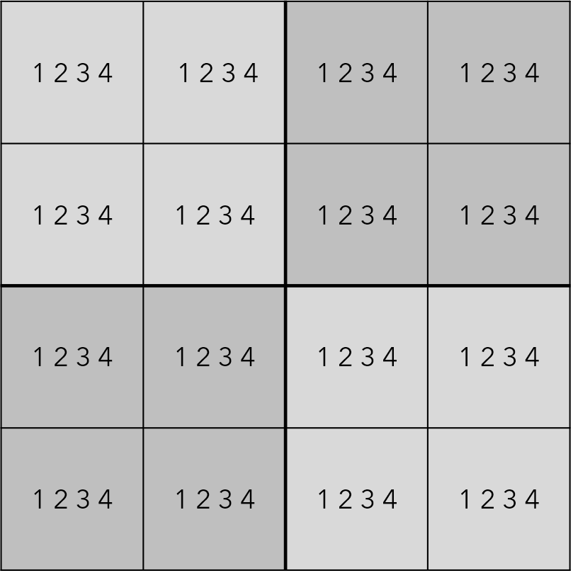
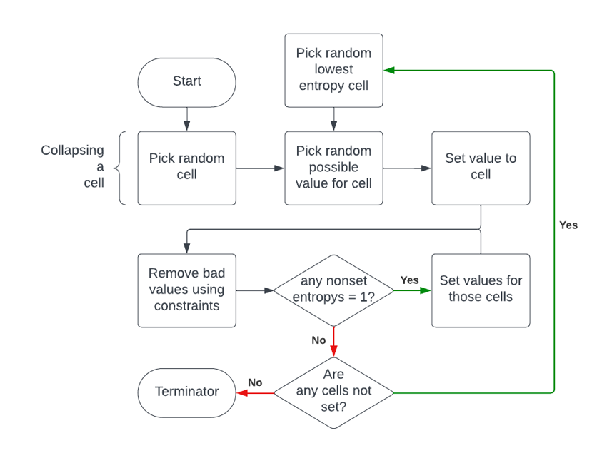
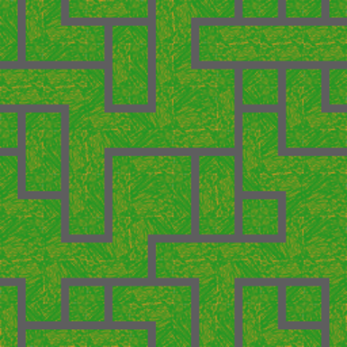
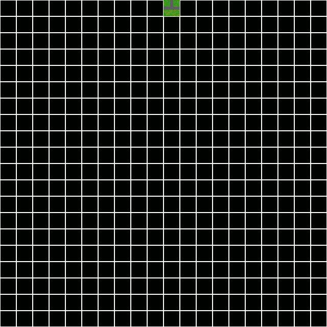

Boids Flocking Algorithm and Unique Applications
| Table of contents |
|---|
| Abstract |
| Introduction |
| Article |
| Refrences |
Abstract
This article delves into the Wave Function Collapse (WFC) algorithm, drawing inspiration from quantum mechanics for procedural content generation. Utilizing the concept of superposition, each map cell is considered a superposition of potential tiles, with entropy guiding collapsed states. Constraints, like Sudoku rules, establish interdependencies. The algorithm initializes in an unobserved state, mirroring quantum principles, collapsing cells into singular values. When applied to map generation, the WFC algorithm manipulates tile sets to craft seamless landscapes by eliminating incompatible possibilities. Despite a time, complexity drawback, its reliability proves valuable for game designers in procedural content generation. The WFC algorithm emerges as a versatile and powerful tool in creative procedural content generation for game design, showing malleability and efficiency across varying scenarios, from character textures to entire maps.
Introduction
In this article I would like to adventure through the process and uses of the wave function collapse algorithm. The way it works is seemingly simple yet inspired by quantum mechanics and the idea that one object can exist in multiple states simultaneously, will bring forward the true strength of the method.
Article
“Superposition is something that happens in quantum mechanics which … means that this map currently exists as every possible map imaginable from the randomly assembled maps all the way to the seamless cohesive maps” – Jabrils (2020) Minecraft, But On a Quantum Computer. 17 Oct 2020. (Accessed: 27 Nov 2023).
Jabrils perfectly summarises the idea that a superposition allows every state to exist simultaneously. We use this idea to allow every cell in the map to exist as every tile and pick and choose the tiles we either don’t want to allow to exist or tiles that we do. The number of possible values that we give a cell we can call the entropy of the cell. This will be useful to determine which cells have collapsed to one value, by simply looking at the cell’s entropy. The way that we can make the cells dependent on each other is by using constraints. Constraints can be described using a sudoku for example, a sudoku has rules, these rules help us infer the value of a cell by what matches the rules. In sudoku you cannot have the same value in the same “row”, “column” or “box”.
In mxgmn’s github repository, after preparing the tile set we are told to “Initialize the wave in the completely unobserved state” – maxum gumin (2023). this is a more ‘quantum mechanics’ oriented way to say we want to see the empty cells as merely unset truth. According to our knowledge of superpositions, an empty sudoku board exists as every permutation of the sudoku, both correct and incorrect complete boards. With a mini sudoku there are 4^16 possible boards and only 288 that are correct.
By finding the correct values for the cell, we must collapse a cell to a single value, “the idea of collapse in the context of entropy is to collapse all the possible states down into one, remove all the entropy from a single variable of the system” –- the coding train (2022). , this is simply done by picking a cell and determining its value from one of its possibilities. Great, so now we have a sudoku with one value, how does this help? Well, we now must apply our constraints. As we know our rules dictate that we cannot allow the same value to exist in the same “row”, “column” or “box”. Hence, we remove any ‘bad’ possibilities from any cells that are affected. This reduces the entropy of the cells in the same “row”, “column”, or “box” from 4 to 3 because we have removed one value from all those cells. We have also managed to reduce the number of possibilities to 4^15. Next, if we collapse a cell of lowest entropy (greater than 1) then we can repeat this process until we have a result that is a complete sudoku! The process can be represented by the flowchart in the figure below.
So, how does this help us with our map generation? Well, we now have the algorithm that we want to follow to approach a result that we want. Let’s start with our tiles. Our set of tiles we will use for this example uses 4 different tiles, as shown below. As you can see, all of the tile’s edges will have one of 2 kinds of edges, either road or grass. This allows us to define the constraints we need. We only want edges that match to be kept as a possibility to make this a seamless map. So, when we collapse a cell in this case, we will remove any possibility of a non-matching neighbour cell, leaving only seamless possible tiles, letting us then collapse those cells and repeat!
However, there is one downside. It’s the algorithms time complexity, without optimisation, the algorithm takes exponentially longer to complete with more tiles and larger dimensions. The big O notation for this is O(hwn) where h = height, w = width and n is the number of tiles. This is due to having to loop through every cell on the grid and loop through every tile to see which tiles are possible for each of the neighbouring cell’s possibilities. As you can see the amount of looping makes the processing time extremely long relative to other procedurally generated terrain methods. However, with optimisations such as memoization, we a can store the result for repeated calculations with the same parameters.
Nevertheless, the method itself is robust and reliable. “We propose a PCG (procedural content generation) generation method that is friendly to game designers by introducing a WFC (wave function collapse) technique that is widely used in texture synthesis.” -- Hwanhee KIM, Teasung HAHN, Sookyun KIM, Shinjin KANG (2020) Despite its speed, it can be extremely useful for game designers to use in a wide variety of ways, from making textures for characters on the spot to vary design yet maintain style to generating entire maps that can be fabricated in the background.
References
| Jabrils (2020) Minecraft, But On a Quantum Computer. 17 Oct 2020. Available at: https://www.youtube.com/watch?v=Xe_7b9pRKY8 |
| maxum gumin (2023). ‘WaveFunctionCollapse’, Available at: https://github.com/mxgmn/WaveFunctionCollapse#algorithm |
| The Coding Train (2022). Coding Challenge 171: Wave Function Collapse. 3 jul 2022. Available at: https://www.youtube.com/watch?v=rI_y2GAlQFM&t=241s |
| Hwanhee KIM, Teasung HAHN, Sookyun KIM, Shinjin KANG (2020) 'Graph Based Wave Function Collapse Algorithm for Procedural Content Generation in Games', Page 1. Available at: https://www.jstage.jst.go.jp/article/transinf/E103.D/8/E103.D_2019EDP7295/_pdf/-char/en |